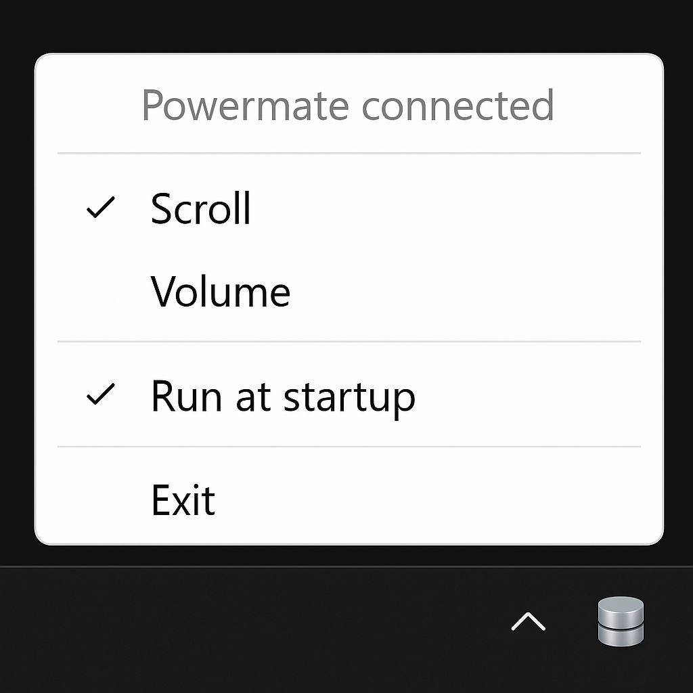

Volume
Rotate to step the default playback device via WASAPI. Click to mute or unmute. LED brightness tracks master volume; it pulses when muted or at zero. No Windows volume OSD.
Windows 11 · USB HID · tray app
System tray control for the Griffin PowerMate USB. Rotate for volume or mouse scroll, click to mute or double-click, LED follows the profile. No custom driver.
Pick a mode from the tray. The last choice is restored on startup.
Rotate to step the default playback device via WASAPI. Click to mute or unmute. LED brightness tracks master volume; it pulses when muted or at zero. No Windows volume OSD.
Rotate to send mouse wheel events. Button release sends a double-click. The hardware LED pulses while this profile is active.
Reconnects after unplug, hub changes, and sleep/resume — including when Windows never sends the usual device or power broadcast.
Optional logon launch via the current-user Run key, persisted with the rest of the app settings.
VID 077D / PID 0410. Uses the Windows HID stack. Bluetooth PowerMate is not supported.
Right-click the knob icon for connection status, profile, autostart, About, and Exit. Only one instance runs at a time.

| Action | Scroll | Volume |
|---|---|---|
| Rotate left | Scroll down | Volume up |
| Rotate right | Scroll up | Volume down |
| Button release | Mouse double-click | Mute / unmute |
| LED | Hardware pulse | Brightness follows volume; pulse when muted or zero |
PowerMateControl.exe.